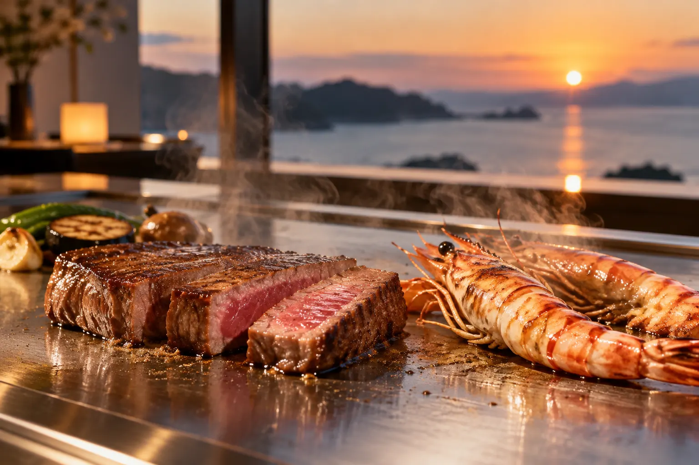
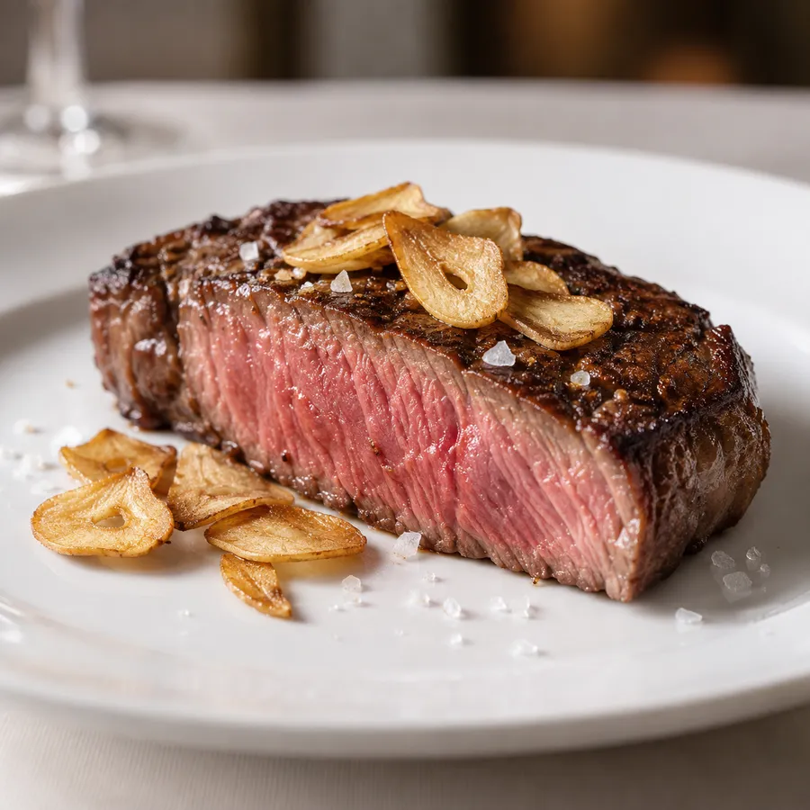
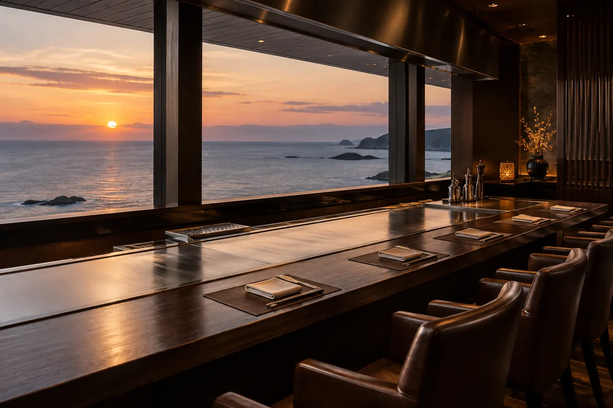
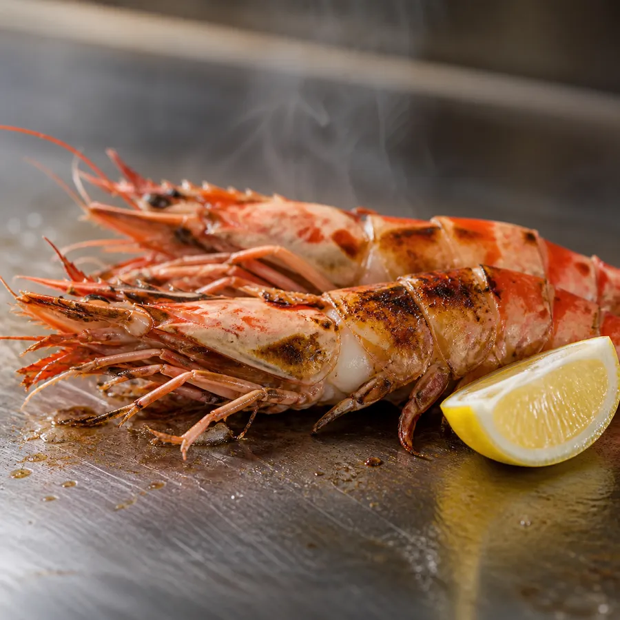

夕凪の海を眺めながら。
こだわり
兵庫県産の黒毛和牛のサーロインとフィレを、お好みの焼き加減で。鉄板の上で香ばしく焼ける瀬戸内の車海老、季節の野菜。料理人がお客さまの目の前で、一品ずつ仕上げます。
カウンターはすべて海側です。日没の時間に合わせたご予約もお受けしています。記念日のメッセージプレートもご用意できます。
料理長

お品書き
価格は税込・お一人様。
店内
鉄板カウンター12席と、4名様までの個室を1室ご用意しています。


ご案内